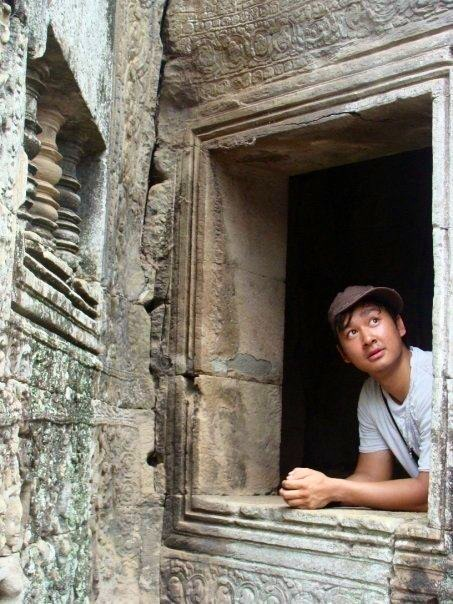

Home
/
About Peng
The History of Peng

My family immigrated here in 1980.
The legacy of my family is similar to the video above. During the Khmer Rouge Genocide, my family escaped the most destitute environment.
There are 6 people in my family beginning with my parents
Father
Phon Ly Lim
Mother
Kimly Soth
Son
Hourt Lim
Son
Hok Lim
Son
Peng Se Lim
Daughter
Melinda Lim